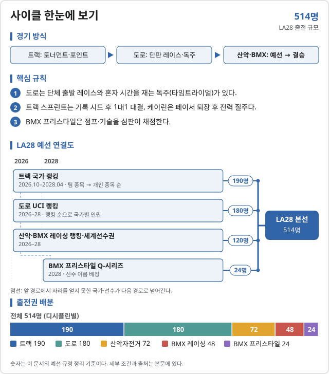

사이클 (Cycling)
2028 LA 올림픽 사이클에는 22개 세부종목이 있다.
- 도로 남자 도로 경주 · 남자 도로 독주 · 여자 도로 경주 · 여자 도로 독주
- 트랙 남자 스프린트 · 남자 팀 스프린트 · 남자 케이린 · 남자 팀 추발 · 남자 옴니엄 · 남자 매디슨 · 여자 스프린트 · 여자 팀 스프린트 · 여자 케이린 · 여자 팀 추발 · 여자 옴니엄 · 여자 매디슨
- 산악자전거 남자 산악자전거 크로스컨트리 · 여자 산악자전거 크로스컨트리
- BMX 레이싱 남자 BMX 레이싱 · 여자 BMX 레이싱
- BMX 프리스타일 남자 BMX 프리스타일 파크 · 여자 BMX 프리스타일 파크

LA28 예선 대회 결과 2026-11-09 08:19 KST
LA28 예선 대회만 싣는다. 위키백과 대회 문서에서 자동으로 모은다. 대회 중에는 한 시간마다 새로 읽는다. 한국 선수가 있는 줄은 붉게 칠했다. 하계 실시간 전체 →
UCI 트랙 세계선수권 상하이 · 10.14~10.18 종료 예선: 트랙 예선 기간 개시 대회 · 결과 22/22종목 · 한국 금0 은0 동0
| 종목 | 금 | 은 | 동 |
|---|---|---|---|
| 남자 | |||
| [[UCI Track Cycling World Championships – 남자 개인 추발 | |||
| 단체 추발 | |||
| 스프린트 | |||
| 단체 스프린트 | |||
| 경륜 | |||
| 매디슨 | |||
| 옴니엄 | |||
| 스크래치 | |||
| 포인트 경기 | |||
| Elimination | |||
| [[UCI Track Cycling World Championships – 남자 1 km 독주 | |||
| 여자 | |||
| 개인 추발 | |||
| 단체 추발 | |||
| 스프린트 | |||
| 단체 스프린트 | |||
| 경륜 | |||
| 매디슨 | |||
| 옴니엄 | |||
| 스크래치 | |||
| 포인트 경기 | |||
| Elimination | |||
| [[UCI Track Cycling World Championships – 여자 500m 독주 | |||
메달 순위:  영국 6-3-3 ·
영국 6-3-3 ·  네덜란드 5-1-1 ·
네덜란드 5-1-1 ·  덴마크 2-3-1 ·
덴마크 2-3-1 ·  독일 2-2-5 ·
독일 2-2-5 ·  중국 2-0-1 ·
중국 2-0-1 ·  이탈리아 1-2-1 ·
이탈리아 1-2-1 ·  벨기에 1-1-3 ·
벨기에 1-1-3 ·  포르투갈 1-1-2
포르투갈 1-1-2
출처: 위키백과 2026 UCI Track Cycling World Championships · 2026-11-06 22:36 읽음
예선 규정
이벤트 및 출전 쿼터
사이클은 트랙·도로·산악자전거·BMX 레이싱·BMX 프리스타일 5개 디시플린이 각자 예선 시스템을 가진다. 전체 514명이며 남녀 수가 같다. 쿼터는 BMX 프리스타일 Q-시리즈만 선수 이름으로, 나머지는 국가 올림픽위원회(NOC)에 배정된다.
| 디시플린 | 일반쿼터 | 개최국쿼터 | 보편성쿼터 | 합계 |
|---|---|---|---|---|
| 트랙 | 190 | 0 | 0 | 190 |
| 도로 | 172 | 4 | 4 | 180 |
| 산악자전거 | 68 | 2 | 2 | 72 |
| BMX 레이싱 | 44 | 2 | 2 | 48 |
| BMX 프리스타일 | 22 | 2 | 0 | 24 |
| 합계 | 496 | 10 | 8 | 514 |
다른 사이클 디시플린 쿼터로 출전하는 선수 1명(성별)을 트랙·도로·산악에 추가로 등록할 수 있다. 상한 안에서만 가능하다.
예선 경로
디시플린마다 경로가 다르며, 아래 각 표는 남녀 공통이다. 자세한 내용은 디시플린 문서에 있다.
트랙 · 남녀 공통
트랙 선발 경로
190명 (남 95 · 여 95) · 예선 기간 2026.10.14–2028.04.10 · UCI 규정 ↗
| 경로 | 쿼터 (성별) | 선발 방식 |
|---|---|---|
| (규정 D.1) 팀 스프린트 | 8팀 × 3명 | [1] |
| (규정 D.1) 스프린트 · 케이린 | 14명 | [2] |
| (규정 D.1) 팀 추발 | 8팀 × 4명 | [3] |
| (규정 D.1) 매디슨 | 6팀 × 2명 | [4] |
| (규정 D.1) 옴니엄 | 13명 | [5] |
- [1]UCI 트랙 올림픽 예선 랭킹(팀 스프린트, 국가별) 상위 8개 국가 올림픽위원회(NOC)가 3명 팀을 낸다. 이 국가들은 다른 종목 출전 선수로 스프린트·케이린에 각 2명까지 나갈 수 있다.
- [2]팀 스프린트 쿼터가 없는 국가 중 스프린트·케이린 통합 개인 랭킹 상위 14명의 국가 올림픽위원회(NOC)가 1자리씩(국가당 최대 2자리) 얻는다. 한 자리로 스프린트와 케이린 모두 출전한다. 대륙 최소 배정을 지킨다.
- [3]팀 추발 랭킹 상위 8개 국가 올림픽위원회(NOC)가 4명 팀을 낸다. 이 국가들은 다른 종목 출전 선수로 매디슨 1팀을 낼 수 있다.
- [4]팀 추발 쿼터가 없는 국가 중 매디슨 랭킹 상위 6개 국가 올림픽위원회(NOC)가 2명 팀을 낸다. 이 6개국은 옴니엄에 1명을 낼 수 있다.
- [5]매디슨 쿼터가 없는 국가 중 옴니엄 랭킹 상위 13개 국가 올림픽위원회(NOC)가 1자리씩 얻는다. 대륙 최소 배정을 지킨다.
도로 · 남녀 공통
도로 선발 경로
180명 (남 90 · 여 90) · 예선 기간 2026.10.20–2027.10.19 · UCI 규정 ↗
| 경로 | 쿼터 (성별) | 선발 방식 |
|---|---|---|
| (규정 D.1.1) UCI 국가 랭킹 | 78명 | [1] |
| (규정 D.1.2) 2027 세계선수권 도로경기 | 2명 | [2] |
| (규정 D.1.3) 2027 대륙선수권 | 6명 | [3] |
| (규정 D.2) 개최국쿼터 | 2명 | [4] |
| (규정 D.4) 보편성쿼터 | 2명 | [5] |
| (규정 D.3) 개인 타임트라이얼 | 35명 (도로경기 쿼터 내) | [6] |
- [1]2027.10.19 UCI 도로 국가 랭킹: 1~5위 4명, 6~10위 3명, 11~20위 2명, 21~43위 1명. 유럽·오세아니아에 대표가 없으면 그 대륙 최상위 국가에 1자리를 준다.
- [2]국가 랭킹으로 쿼터를 얻지 못한 국가 중 2027 세계선수권(오트사부아) 엘리트 도로경기 상위 2개 국가 올림픽위원회(NOC)가 1자리씩 얻는다.
- [3]앞 경로로 쿼터가 없는 국가 중 아프리카·아메리카·아시아 대륙선수권 엘리트 도로경기 상위 2개국씩 1자리. 유럽·오세아니아는 없다.
- [4]미국에 성별당 도로경기 2자리를 보장한다. 개인 타임트라이얼에는 개최국 보장이 없다.
- [5]삼자위원회가 배정한다. 2027.10.19 UCI 개인 랭킹으로 수준을 입증해야 한다.
- [6]도로경기 쿼터를 받은 국가만 대상. 국가 랭킹 상위 25개국 1자리 + 2027 세계선수권 개인 타임트라이얼 상위 10개국 1자리, 국가당 최대 2명. 대륙당 최소 2개국을 보장한다.
산악자전거 · 남녀 공통
산악자전거 선발 경로
72명 (남 36 · 여 36) · 예선 기간 2026.04.27–2028.05.29 · UCI 규정 ↗
| 경로 | 쿼터 (성별) | 선발 방식 |
|---|---|---|
| (규정 D.1.1) UCI 산악 올림픽 예선 랭킹 | 27명 | [1] |
| (규정 D.1.2) 2027 대륙선수권 | 3명 | [2] |
| (규정 D.1.3) 2027 세계선수권 | 4명 | [3] |
| (규정 D.2) 개최국쿼터 | 1명 | [4] |
| (규정 D.3) 보편성쿼터 | 1명 | [5] |
- [1]2028.05.30 국가별 랭킹(국가 상위 3명 포인트 합산, 2026.04.27–2027.05.30과 2027.05.31–2028.05.29 두 기간): 1~8위 2명, 9~19위 1명. 유럽·오세아니아 최소 1개국 보장.
- [2]랭킹으로 쿼터가 없는 국가 중 아프리카·아메리카·아시아 대륙선수권 엘리트 개인 최상위 국가 1자리씩.
- [3]2027 세계선수권(오트사부아) 크로스컨트리 엘리트 상위 2개국 + U23 상위 2개국, 앞 경로로 쿼터가 없는 국가만 1자리씩.
- [4]미국에 성별당 1명을 보장한다. 다른 경로로 확보하면 랭킹 차순위에게 간다.
- [5]삼자위원회가 배정한다. 예선 대회·훈련 캠프에서 수준을 입증해야 한다.
BMX 레이싱 · 남녀 공통
BMX 레이싱 선발 경로
48명 (남 24 · 여 24) · 예선 기간 2026.08.04–2028.05.29 · UCI 규정 ↗
| 경로 | 쿼터 (성별) | 선발 방식 |
|---|---|---|
| (규정 D.1.1) UCI BMX 레이싱 올림픽 예선 랭킹 | 17명 | [1] |
| (규정 D.1.2) 2027 대륙선수권 | 3명 | [2] |
| (규정 D.1.3) 2027 세계선수권 | 1명 | [3] |
| (규정 D.1.4) 2028 세계선수권 | 1명 | [4] |
| (규정 D.2) 개최국쿼터 | 1명 | [5] |
| (규정 D.3) 보편성쿼터 | 1명 | [6] |
- [1]2028.05.30 국가별 랭킹(국가 상위 3명 포인트 합산): 1~2위 3명, 3~5위 2명, 6~10위 1명. 세계선수권·월드컵 최고 14개·대륙선수권 1개 등 성적을 반영한다. 유럽·오세아니아 최소 1개국 보장.
- [2]랭킹으로 쿼터가 없는 국가 중 아프리카·아메리카·아시아 대륙선수권 엘리트 개인 최상위 국가 1자리씩.
- [3]2027 세계선수권(오트사부아) 엘리트 개인, 앞 경로로 쿼터가 없는 국가 중 최상위 1개국.
- [4]2028 세계선수권(미국 휴스턴, 2028.05.21–27) 엘리트 개인, 앞 경로로 쿼터가 없는 국가 중 최상위 1개국.
- [5]미국에 성별당 1명을 보장한다. 다른 경로로 확보하면 랭킹 차순위에게 간다.
- [6]삼자위원회가 배정한다. 예선 대회·훈련 캠프에서 수준을 입증해야 한다.
BMX 프리스타일 · 남녀 공통
BMX 프리스타일 선발 경로
24명 (남 12 · 여 12) · 예선 기간 2026.11.03–2028 마지막 Q-시리즈 · UCI 규정 ↗
| 경로 | 쿼터 (성별) | 선발 방식 |
|---|---|---|
| (규정 D.1) 올림픽 Q-시리즈 | 6명 (선수 이름) | [1] |
| (규정 D.2.1) 2026 어반 사이클링 세계선수권 | 2명 | [2] |
| (규정 D.2.2) 2027 세계선수권 | 3명 | [3] |
| (규정 D.3) 개최국쿼터 | 1명 | [4] |
- [1]도쿄(2028.05.04–07)·상하이(05.11–14)·몬트리올(06.01–04) Q-시리즈 최종 순위 상위 6명이 이름으로 얻는다. 같은 국가 3번째 선수는 건너뛴다.
- [2]2026 어반 사이클링 세계선수권(사우디 리야드, 2026.11.03–07) 파크 엘리트, Q-시리즈로 쿼터가 없는 대륙의 상위 2개국에 1자리씩. 대륙 대표를 우선한다.
- [3]2027 세계선수권(오트사부아) 파크 엘리트, 아직 쿼터가 없는 대륙을 우선해 상위 3개국에 1자리씩.
- [4]미국에 성별당 1명을 보장한다. 보편성쿼터는 없다.
개최국·보편성 쿼터
개최국 미국에는 도로경기 성별 2명, 산악·BMX 레이싱·BMX 프리스타일 성별 1명을 보장한다. 트랙에는 개최국 쿼터가 없다. 다른 경로로 확보하면 각 디시플린 차순위에게 간다.
보편성 쿼터는 8명이다. 도로 성별 2명, 산악·BMX 레이싱 성별 1명이며 트랙·BMX 프리스타일에는 없다. IOC 초청 2027.10.01, 신청 마감 2028.01.15.
참가 자격
올림픽 헌장(제41조 국적, 제43조 세계반도핑규약 및 경기 조작 방지 규정), 여성 카테고리 보호에 관한 IOC 정책, IOC 참가 조건 및 UCI 규정을 충족하고, UCI 회원 연맹의 유효한 라이선스를 가져야 한다.
| 디시플린 | 출생 기준 | 추가 요건 |
|---|---|---|
| 트랙 | 2010.12.31 이전 출생 (2028년 만 18세) | 트랙 올림픽 예선 랭킹 대회에서 UCI 포인트 10점 이상 |
| 도로 | 2009.12.31 이전 출생 (2028년 만 19세) | 2027.10.19 또는 2028.06.13 UCI 도로 개인 랭킹 10점 이상 |
| 산악자전거 | 2009.12.31 이전 출생 (2028년 만 19세) | 2028.05.30 UCI 크로스컨트리 개인 랭킹 10점 이상 |
| BMX 레이싱 | 2010.12.31 이전 출생 (2028년 만 18세) | 2028.05.30 개인 랭킹 10점 이상 + 예선 기간 세계선수권·월드컵 1회 이상 출전 |
| BMX 프리스타일 | 2013.12.31 이전 출생 (2028년 만 15세) | 예선 기간 Q-시리즈·세계선수권·월드컵 1회 이상 출전 |
예선 일정
예선 및 대회 일정
2026년에는 디시플린별 예선 기간이 차례로 시작된다. 2026.11 리야드 어반 세계선수권은 2026년에 실제 쿼터(BMX 프리스타일)를 주는 유일한 대회다.
| 날짜 | 일정 |
|---|---|
| 2026.04.27 | 산악자전거 예선 기간 시작 |
| 2026.08.04 | BMX 레이싱 예선 기간 시작 |
| 2026.10.14 | 트랙 예선 기간 시작 |
| 2026.10.20 | 도로 예선 기간 시작 |
| 2026.11.03–07 | 2026 UCI 어반 사이클링 세계선수권 리야드 (BMX 프리스타일 2자리) |
| 2027.08.24–09.05 | 2027 UCI 사이클링 세계선수권 오트사부아 (도로·산악·BMX) |
| 2027.10.19 | 도로 국가 랭킹 확정 |
| 2027.11.17 · 12.17 | 도로 쿼터 통보 · 사용 확정 |
| 2028.04.11 | 트랙 최종 랭킹 · 04.18 통보 · 05.02 확정 |
| 2028.05.04–06.04 | BMX 프리스타일 올림픽 Q-시리즈 (도쿄·상하이·몬트리올) |
| 2028.05.21–27 | 2028 UCI BMX 레이싱 세계선수권 휴스턴 |
| 2028.05.30 | 산악·BMX 레이싱 최종 랭킹 |
| 2028.06.06–21 | 산악·BMX 쿼터 통보 · 확정 · 재배정 |
| 2028.06.26 | LA28 스포츠 엔트리 마감 |
| 2028.07.14–30 | LA28 올림픽 |
직전 올림픽 메달리스트
2024 파리 올림픽
| 세부종목 | 금 | 은 | 동 |
|---|---|---|---|
| 남자 도로 경주 | Remco Evenepoel (BEL) | Valentin Madouas (FRA) | Christophe Laporte (FRA) |
| 남자 도로 독주 | Remco Evenepoel (BEL) | Filippo Ganna (ITA) | Wout van Aert (BEL) |
| 여자 도로 경주 | Kristen Faulkner (USA) | Marianne Vos (NED) | Lotte Kopecky (BEL) |
| 여자 도로 독주 | Grace Brown (AUS) | Anna Henderson (GBR) | Chloé Dygert (USA) |
| 남자 스프린트 | Harrie Lavreysen (NED) | Matthew Richardson (AUS) | Jack Carlin (GBR) |
| 남자 팀 스프린트 | Roy van den Berg·Harrie Lavreysen·Jeffrey Hoogland (NED) | Ed Lowe·Hamish Turnbull·Jack Carlin (GBR) | Leigh Hoffman·Matthew Richardson·Matthew Glaetzer (AUS) |
| 남자 케이린 | Harrie Lavreysen (NED) | Matthew Richardson (AUS) | Matthew Glaetzer (AUS) |
| 남자 팀 추발 | AUS | GBR | ITA |
| 남자 옴니엄 | Benjamin Thomas (FRA) | Iúri Leitão (POR) | Fabio Van den Bossche (BEL) |
| 남자 매디슨 | Iúri Leitão·Rui Oliveira (POR) | Simone Consonni·Elia Viviani (ITA) | Niklas Larsen·Michael Mørkøv (DEN) |
| 여자 스프린트 | Ellesse Andrews (NZL) | Lea Friedrich (GER) | Emma Finucane (GBR) |
| 여자 팀 스프린트 | Katy Marchant·Sophie Capewell·Emma Finucane (GBR) | Rebecca Petch·Shaane Fulton·Ellesse Andrews (NZL) | Pauline Grabosch·Emma Hinze·Lea Sophie Friedrich (GER) |
| 여자 케이린 | Ellesse Andrews (NZL) | Hetty van de Wouw (NED) | Emma Finucane (GBR) |
| 여자 팀 추발 | USA | NZL | GBR |
| 여자 옴니엄 | Jennifer Valente (USA) | Daria Pikulik (POL) | Ally Wollaston (NZL) |
| 여자 매디슨 | Chiara Consonni·Vittoria Guazzini (ITA) | Elinor Barker·Neah Evans (GBR) | Maike van der Duin·Lisa van Belle (NED) |
| 남자 산악자전거 크로스컨트리 | Tom Pidcock (GBR) | Victor Koretzky (FRA) | Alan Hatherly (RSA) |
| 여자 산악자전거 크로스컨트리 | Pauline Ferrand-Prévot (FRA) | Haley Batten (USA) | Jenny Rissveds (SWE) |
| 남자 BMX 레이싱 | Joris Daudet (FRA) | Sylvain André (FRA) | Romain Mahieu (FRA) |
| 여자 BMX 레이싱 | Saya Sakakibara (AUS) | Manon Veenstra (NED) | Zoé Claessens (SUI) |
| 남자 BMX 프리스타일 파크 | José Torres (ARG) | Kieran Reilly (GBR) | Anthony Jeanjean (FRA) |
| 여자 BMX 프리스타일 파크 | Deng Yawen (CHN) | Perris Benegas (USA) | Natalya Diehm (AUS) |
대한민국
한국 출전 전망
2026-10-04 기준 참고대부분 디시플린의 LA28 예선 랭킹 산정이 막 시작되어 인원 범위를 계산하지 않았다.
인원 범위 미산정 · 아시아 대륙 경로 확인 단계
트랙(2026.10.14)과 도로(2026.10.20)는 예선 기간이 아직 시작되지 않았고, 산악·BMX 레이싱도 랭킹 누적 초기다. 현재 순위를 단순 적용할 근거가 없어 인원 범위 대신 경로와 최근 성적만 정리한다. 이는 출전 불가나 출전 보장을 뜻하지 않는다.
| 선수·종목 | 최근 성적 | 근거 |
|---|---|---|
| 신지은 · 여자 개인 타임트라이얼 | 2026 아시안게임 동메달 (36:56.14) | 스타뉴스 · 2026.09.20 |
| 여자 팀 추발 | 2026 아시안게임 동메달 | 한국일보 · 2026.09.30 |
| 남자 팀 추발 | 2026 아시안게임 동메달 | 한국일보 · 2026.09.30 |
도로: 2027.10.19 국가 랭킹 43위 안에 들지 못해도, 2027 아시아선수권 엘리트 도로경기에서 쿼터 미확보 국가 중 상위 2개국에 들면 성별 1자리를 얻는다. 개인 타임트라이얼은 도로경기 쿼터를 얻은 국가만 대상이다.
트랙: 팀 추발은 랭킹 상위 8개국만 출전한다. 아시아 대표가 지구력 종목에 없으면 옴니엄 랭킹 아시아 최상위 국가에 1자리가 돌아가는 대륙 특례가 있다.
산악·BMX 레이싱: 랭킹 밖이어도 2027 아시아선수권 엘리트 개인 최상위 국가가 성별 1자리를 얻는다.
자료 기준: 2026 아시안게임 사이클 결과. 아시안게임은 LA28 사이클 예선 경로가 아니다. 예선 랭킹이 쌓이는 2027년 이후 다시 산정해야 한다.
사이클 · 올림픽예선 | 규정 확인 2026.10.04 · 한국 전망 기준 2026.10.04
각주
외부 링크
공식 근거
- UCI · LA28 Qualification System, Cycling Track (PDF, 2026.05.12)
- UCI · LA28 Qualification System, Cycling Road (PDF, 2026.05.12)
- UCI · LA28 Qualification System, Mountain Bike (PDF, 2026.05.12)
- UCI · LA28 Qualification System, BMX Racing (PDF, 2026.05.12)
- UCI · LA28 Qualification System, BMX Freestyle (PDF, 2026.07.22)
- 스타뉴스 · 신지은 아시안게임 개인 타임트라이얼 동메달 (2026.09.20)
- 한국일보 · 남녀 팀 추발 동메달 (2026.09.30)
- UCI · LA28 트랙 경기장 (카슨 벨로드롬)
규정 확인일: 2026.10.04. IOC가 게시한 UCI 원문 PDF 5종을 기준으로 정리했다. 도로 원문 B.1의 보편성 합계 칸은 "2"로 적혀 있으나 성별 2명씩으로 합계 4명이다. 기존 페이지는 Road Race를 "도로독주"로 옮겼으나, 이 문서는 도로경기(Road Race)와 개인 타임트라이얼(Individual Time Trial)로 구분했다. 본 문서는 비공식 한국어 요약이며 최종 적용은 UCI 공지를 따른다.